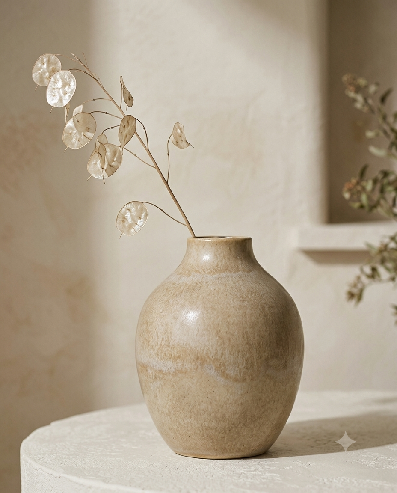

01Story
물건이 공간에
스며드는 방식에 대해
생각합니다.
트렌드보다 오래가는 것, 많기보다 깊은 것. 소유하는 즐거움이 아니라, 함께 있는 시간이 좋아지는 물건을 만듭니다.
“Fewer things, kept longer.”
yw는 일상의 공간에 조용히 자리하는 오브제를 만듭니다. 시간이 지날수록 그 자리에 있어야 할 것처럼 느껴지는 물건.
View Objects
트렌드보다 오래가는 것, 많기보다 깊은 것. 소유하는 즐거움이 아니라, 함께 있는 시간이 좋아지는 물건을 만듭니다.
“Fewer things, kept longer.”
화병, 캔들홀더. 하나만 두어도 방의 분위기가 달라지는 피스로 구성됩니다. 각 제품은 소량으로 제작되며, 시즌마다 새로운 에디션으로 선보입니다.
컵, 볼, 플레이트. 매일 쓰는 물건이 아름다울 수 있다는 전제로 기획됩니다. 사용할수록 익숙해지고, 익숙해질수록 손에서 놓기 어려운 형태.
비가 그친 뒤의 공기 같은 것. 한 시즌, 정서가 머무는 형태로.
브랜드가 말하는 것보다 물건이 말하게 하는 것. 그것이 yw의 태도입니다.